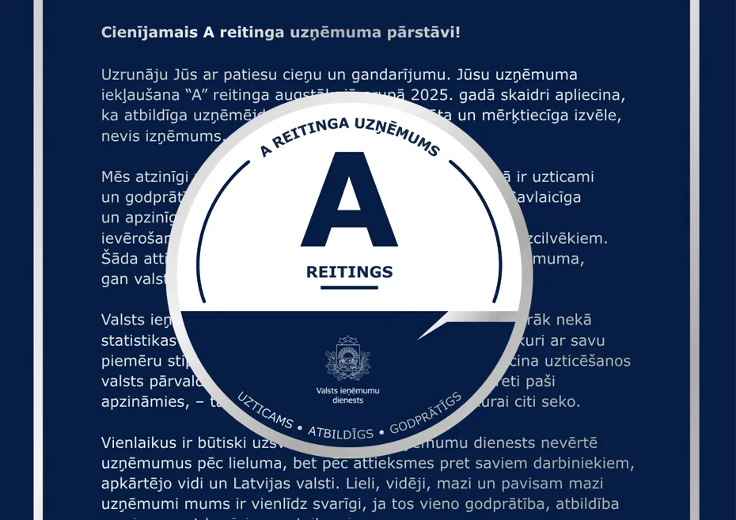

VID piešķīris A reitingu
Šodien mēs svinam mazas uzvaras. Valsts ieņēmumu dienests mums ir piešķīris augstāko uzņēmuma novērtējumu par mūsu darbu 2025. gadā. Esam ļoti gandarīti par šādu atzinību un ceram turpināt strādāt ar tādu pašu centību.